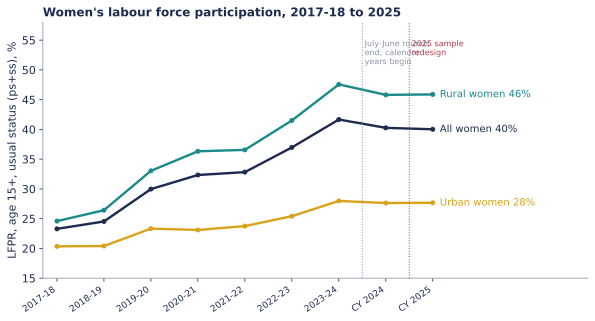
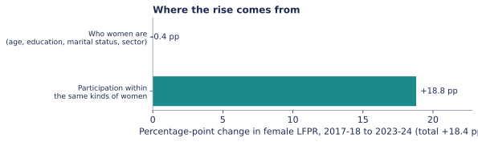
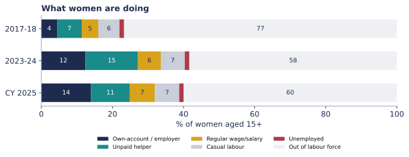

Where did India's rise in women's work come from?
Periodic Labour Force Survey unit-level data, 2017-18 to 2025 · Draft work sample by [Your Name]
Women's labour force participation (age 15+, usual status) climbed from 23.3% in 2017-18 to 41.7% in 2023-24. I asked a narrow question: is that because different women entered the population, or because the same kinds of women started working, and in what kind of work?

It is not about who women are
Splitting the change by sector, age, education and marital status leaves essentially no room for composition: it accounts for -0.4 points of the 18.4-point rise. Participation went up within the same kinds of women.

The new work is mostly self-employment and unpaid help
Own-account work grew from 4.5% to 12.4% of all women, and unpaid help in household enterprises from 7.0% to 14.8%. Together that is about 86% of the rise in female employment. Regular wage work rose by 1.8 points and casual labour by 0.8.

What I cannot say yet
Calendar 2025 shows participation at 40.0% and unpaid help falling by 3.8 points, but the survey changed from July-June rounds to calendar years and the sample was redesigned, so I treat that move as indicative, not a trend. These estimates also have no standard errors yet, and a decomposition shows what did not change, not why participation rose.
Data and checks
First-visit PLFS person files, weighted with each release's own rule. Headline indicators reproduce MoSPI's published figures for 2022-23, 2023-24, calendar 2024 and 2025, and for 2017-18's LFPR. One 2022-23 quirk (nine Assam records with a very large multiplier) is handled by reporting results with and without those records. Code and tables: GitHub repository.